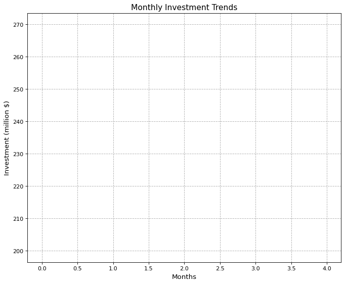
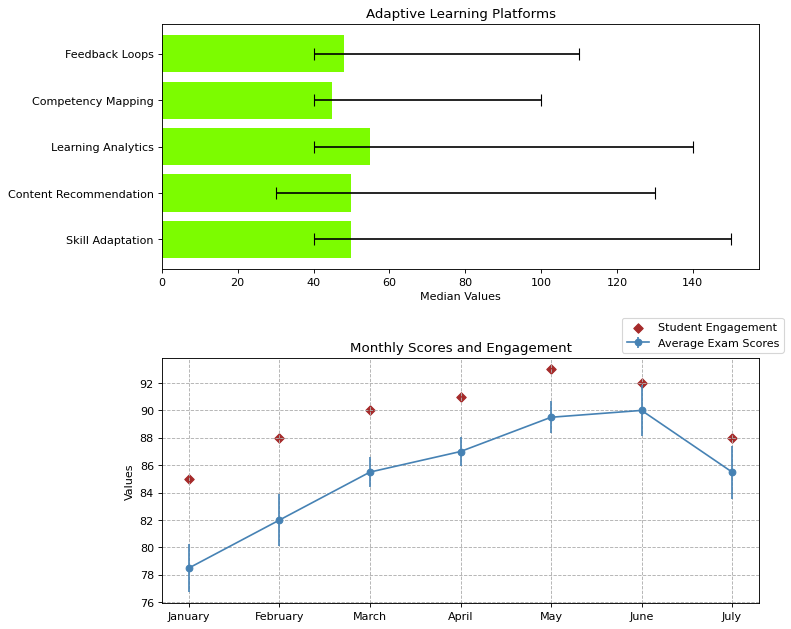
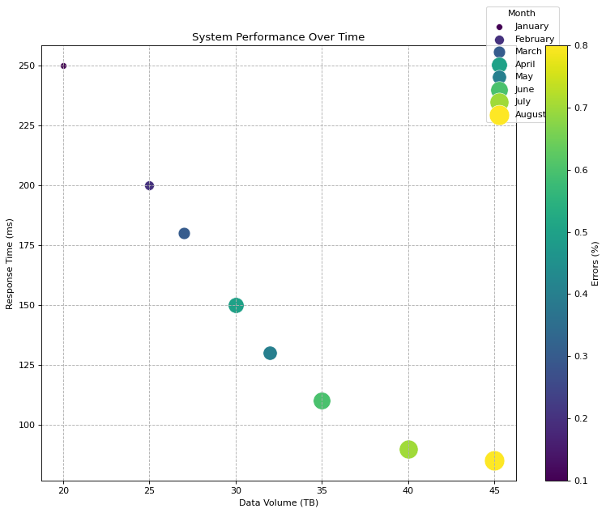

Total failure cases of factor "count": 3
| ID | Chart | Question | Additional Information | Pitfalls | Most relevant pitfall |
490.png |
 |
How many tick marks are there on the y-axis?
|
{
"Ground Truth": "5",
"Prediction": "To determine the number of tick marks on the y-axis:\n\n1. Observe the y-axis range: It starts at 200 and ends at 270.\n2. Identify the interval between tick marks: The interval is 10 units (e.g., 200, 210, 220, etc.).\n3. Count the tick marks:\n - Starting from 200: 200, 210, 220, 230, 240, 250, 260, 270.\n - This gives us 8 tick marks.\n\n<8>"
}
|
The potential pitfalls in the chart image that could cause the error include: 1. **Incorrect Tick Mark Identification**: The tick marks may appear visually confusing or misaligned due to the spacing or labeling, leading to incorrect counting. 2. **Grid Lines Interference**: The grid lines might be mistaken for additional tick marks, causing an overestimation of the actual number of tick marks. 3. **Code vs. Image Mismatch**: There might be a discrepancy between what the code generates and what is actually displayed in the image. For example, the code may set certain parameters that aren't accurately reflected in the rendered chart. 4. **Visual Perception Bias**: The evenly spaced labels and grid lines can create an optical illusion, making it seem like there are more or fewer tick marks than there actually are. The most relevant pitfall to this error is the **incorrect tick mark identification**. The model likely miscounted the tick marks due to a misunderstanding of the interval and range of the y-axis. <most_relevant>Incorrect tick mark identification<most_relevant> |
Incorrect tick mark identification |
492.png |
 |
Round the student engagement for March to one decimal place.
|
{
"Ground Truth": "90.0",
"Prediction": "89.5"
}
|
The potential pitfalls in the chart image that may cause this error include: 1. **Misinterpretation of Data Points:** The scatter points representing "Student Engagement" might be visually close but not exactly aligned with their true numeric values, leading to incorrect rounding. 2. **Grid Lines and Tick Marks:** The grid lines and tick marks on the y-axis can sometimes create visual ambiguity, making it hard to discern precise values. 3. **Color Contrast and Visibility:** If the colors of the data points do not contrast well with the background or other elements, it could lead to misreading the exact position of the point. 4. **Manual Rounding Error:** If someone manually reads the value off the chart instead of using the actual data, they might round incorrectly based on visual estimation. The most relevant pitfall to this specific error is the **misinterpretation of data points**. In the image, the "Student Engagement" diamond for March appears slightly above the 90 mark. However, the actual data value is 90, which when rounded to one decimal place remains 90.0. The model likely interpreted the position of the diamond as closer to 89.5 due to visual approximation. <most_relevant>Misinterpretation of data points</most_relevant> |
Misinterpretation of data points |
779.png |
 |
How many months have a Response Time less than 150 ms?
|
{
"Ground Truth": "5",
"Prediction": "4"
}
|
### Potential Pitfalls in the Chart Image: 1. **Color Mapping Misinterpretation**: The colors in the bubbles might be misleading if someone focuses on them instead of the y-axis values. However, the color represents errors, not response time. 2. **Bubble Size Misinterpretation**: The size of the bubbles corresponds to the error percentage, which could distract from focusing on the response time. 3. **Grid Line Interference**: The grid lines may make it slightly challenging to accurately read the exact value of the response time, especially near the 150 ms mark. 4. **Legend Overlap**: The legend overlaps with the plot area, potentially obscuring some parts of the chart or distracting attention from the actual data points. 5. **Data Point Proximity**: Some data points are very close to each other, making it difficult to distinguish their exact values without closely inspecting the y-axis. ### Most Relevant Pitfall: The most relevant pitfall causing the error in counting the number of months with a Response Time less than 150 ms is the **grid line interference**. This makes it hard to determine whether certain points are just above or below the 150 ms threshold. <most_relevant>Grid line interference</most_relevant> |
Grid line interference |